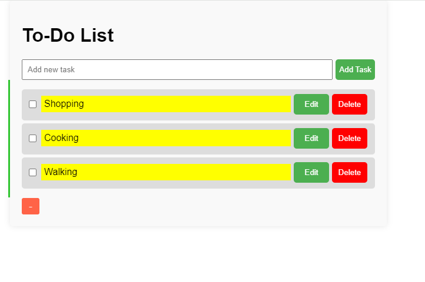

To-do List Project
I built a to-do list application that allows the addition and deletion of tasks to a list. The user is also able to apply notifications by settting a time and date. I used HTML, CSS, and JavaScript to build this application.
Access the project in the following link: To-do List
Access the project source code in the following link: To-do List
Access case study in the following pdf: Case Study
Book Website

This is a book website that was built with HTML, CSS, Javascript, and Bootstrap. I worked on implementing a navigation bar at the top of the website, implementing a countdown timer, and adding a mystery book genre page.
Access the project in the following link: Book Website
Access the project source code in the following link: Book Website